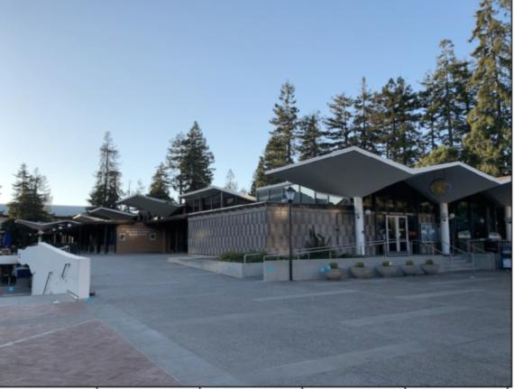
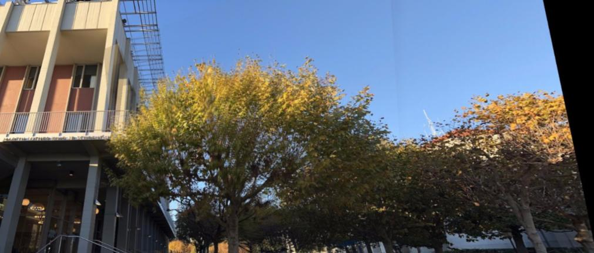

Project 6 - Image Stitching
Ankit Mathur
In this project, we focused on stitching images together by finding homographies to map points from the space of one image to the space of another image. Then, we transform these images to lie in the same plane and are able to show these side by side after performing some blending.
Homographies
In order to compute the matrix for the homography, we can start by noting that the equation for the transformation is p' = Hp. Since our points are only in 2 dimensions, we can ignore the fact that we have a third row by using the last element of that row as a scaling factor. Then, we need to solve for the other eight elements in the matrix.
To do that, we expand the equations here:
Rectification
Here, we need to test the homographies that we have made so far. Therefore, we test this by picking a bounding box over an object and calling the warp function in order to change the perceived shape/orientation of the object. We do this simply by calling warp.
Here are some examples:
Mosaics
GBC
.jpg)

Gardens
Telegraph
As an additional note, in my code, I included a horizontal blending function which allowed me to get rid of black elements in the image that showed up from the stitching.
Part B: Automatic Stitching
As an additional note, in my code, I included a horizontal blending function which allowed me to get rid of black elements in the image that showed up from the stitching.
Harris Corners
To detect corners, we use the Harris Corner Detection algorithm. The basic principle here is that we measure a response to a specific kind of function. Seeing a varied response to the function over some window indicates that it is likely that there is a corner in that location. Using this, we are able to detect the corners in the image.
Why is this even a good idea? It turns out that, more so than edges, corners provide great feature points for an image. Edges can change with perspective but corners remain in a somewhat fixed location.
In my implementation here, I set the minimum distance between the coordinates to be 10 instead of 1 because that was producing way too many points.
Here are a couple images that displays some of the outputs from this:
Adaptive Non-Maximal Suppression
One of the great contributions of the MOPS paper is the strategy for adaptive non-maximal suppression of harris corner points. Basically, we want to extract fewer points because the computation cost of matching is superlinear in the number of interest points. Furthermore, we want the points to be distributed well over the entire image so that we are likely to get matches to other images. If the points were all in a couple of places, that wouldn't really help.
While the paper is complex, all that really needs to be done here is to say that for every point, we find the minimum radius to the next feature point such that the corner response for the existing interest point is less than some constant multiplied by the response for the other point. In math this looks like this:
Then, we pick some number of interest points with the largest radius to the next significant feature point. What this means is that we retain the points with the strongest responses that are also far away from other strong points. This gives us a set of points that are well distributed and strong.
Here are those same images with the ANMS filtered points:
Extracting Features and Feature Matching
The next step once a filtered set of points has been filtered is to find actual patches of features. We look at 40x40 interest points, and we downsample those patches to be 8x8. This eliminates high frequency signal that interferes with the accurate matching of features. We don't want noise to interfere with the general feature that we want to match.
Furthermore, we bias/gain normalize the patches by subtracting the mean and dividing by the standard deviation. This makes our features invariant to overall intensity differences and an invariant shift to the distribution of RGB.
Then, we match the features by performing an SSD for each feature with every other feature. We compute a ratio of the 1-NN to the 2-NN. Intuitively, this allows us to pick only those matches that have a single good match, not multiple. We return matches that satisfy this ratio.
- 
RANSAC
Once we've computed these feature matches, we still have some outlier matches in the set. Therefore, we turn to the RANSAC method of estimation. Here, we choose 4 random points and compute an exact homography from them. After that, we compute the number of points that are inliers in this homography and keep the set with the largest homography. Probabilistically, it's likely that this process converges to the right set of points. Finally, we compute a new homography based on the largest set of inliers.
Auto-stitched Mosaics
I wrote code to automatically stitch multi-image panoramas together. Here are 3 of those (the first stitches 3 images together). The best result in my opinion is the one of GBC.
Results: (automatic first, then manual)
Other nice results:
- 
Bells and Whistles: Panorama Identification
The strategy that we need to take here is to compute features for each of the images and by that process compute the pairwise homographies. The homography encompasses all of the different kinds of transformations that a panorama can undergo. After computing the homographies, we use RANSAC to determine the outliers and the inliers. From this, assuming a Bernoulli independence assumption for the probability that each outlier is actually an outlier, we compute a probability of whether an image is a match (by thresholding the computed probability with Bayes rule). A K-nearest-neighbor approach for identifying matching features is also proposed.
This approach is proposed by Brown and Lowe in 2003 in Panorama Identification.
My implementation does not use the K-nearest-neighbor approach. Instead, it computes feature matches and the computes the pairwise homography. We then use the largest inlier set to compute the match probability and add it to the success set if it passes the threshold.
The experiment I conduced involved taking my existing best 3 mosaics and putting them into a list. The goal was to have the 3 mosaics be detected as a set. In other words, if I had images 1,2,3, I required that I get the tuples (1,2) and (2,3), but I was also fine with the tuple (1,3) because some of the images were taken so close together that there would be matching features across multiple.
My results worked out well (with some noise):
Observe here how there are some elements which are wrong (2,13) gets a match and so does (9, 13). However, the rest of the sets match perfectly, and the generated mosaics were the same ones I had above!
Bells and Whistles: Rotation Invariance
It took me some time to understand what exactly needed to be done here, but what I eventually arrived at was that to make something rotation invariant, we actually needed to change the feature at the time of creation.
A concept that implicitly encodes the rotation is the angle of the gradient. Therefore, we compute the angle of the gradient in both directions (x and y).
Then, we use our knowledge of geometry to compute the angle of the gradient, which is arctan2(y,x). Then, we rotate every feature such that its gradient is at 0 degrees by rotating the feature patch by this angle.
If we do this to all features we compute, then we have features that are rotation invariant (they all have the same gradient angle after transformation).
Here, on the left in the first gallery, I have the original feature. I call my rotation invariance feature on it, and I get the invariant version.
In the next gallery, I have the original feature rotated by 45 degrees. Calling the rotation invariance function returns the same feature!
The most interesting thing I learned in this project was definitely RANSAC. It was refreshing to learn a new regression technique that was targeted at the weaknesses of least squares.